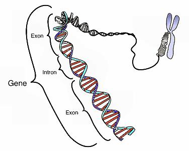

Геном је скуп наследних информација које се налазе у хромозомима хаплоидне ћелије. Област молекуларне биологије која се бави испитивањем структуре генома и организацијом генетичке информације назива се геномика. На прелазу из XX у XXI век она доживљава процват.
Величина генома изражава се као C-вредност (где је C узето од међународне ознаке за цитозин) која представља број базних парова у хаплоидној гарнитури хромозома. Вршена су упоређивања величине генома са сложеношћу биолошке врсте и утврђена је међуоднос између величине генома вируса, бактерија и еукариота и њихове сложености:
Тај међуоднос не важи при међусобном упоређивању самих еукариота. Много старије и једноставније еукариотске врсте имају већи и сложенији геном од млађих и сложенијих врста. Тај феномен назива се парадокс C вредности. Поређења ради, геном човека садржи 3,2 милијарде базних парова и истовремено је 200 пута мањи од генома једне паразитске амебе. За пример можемо узети и винску мушицу која има број гена приближан човеку. Парадокс C-вредности указује на чињеницу да повећање количине ДНК не значи истовремено и повећање броја гена.
Зато се поставило питање да ли сви низови нуклеотида у геному носе информацију(тзв. код) за синтезу протеина или не. Истраживања су показала да се у геному налазе поновљени низови нуклеотида. Утврђено је да мање од 3%генома човека припада низовима нуклеотида који се преводе у нуклеотиде, а улога 97% још увек није позната. Такви низови чине чак 55% генома. Они су неправедно названи “смеће ДНК”. Наука није испитала да ли поновљени низови имају неку другу функцију, па тако не знамо да ли постоји нека друга биолошка улога и каква би она могла да буде. Једна њихова врста је нашла практичну примену у криминологији и судској медицини познату као генетички отисци прстију. Поновљени низови могу да се поделе у неколико категорија, а то су:
Сателити су серије кратких низова нуклеотида који се узастопно понављају од неколико стотина хиљада до неколико милиона пута. Налазе се на тачно одређеним регионима у хромозому. Ови поновљени низови у човеку чине мање од 10% генома, док код неких инсеката чине скоро половину генома. Претпоставља се да је њихова улога значајна за процесе настанка нових врста и да учествују у спаривању хомологних хромозома током мејозе. Интермедијарна ДНК је добила назив по томе што се, према броју поновљених низова налазе између сателитских и јединствених низова. Расута је по целом геному у облику краћих или дужих поновљених низова. Фамилије гена се састоје од чланова сличне примарне структуре, а настале су дупликацијама предачког гена. Протеински производи тих гена се, као и сами гени, одликују сличном примарном стуктуром и чине протеинску фамилију. Геном може бити
Митохондријски геном је дволанчани хеликс у митохондријама у облику прстена. Садржи гене битне за функционисање ћелије. Налази се у неколико копија у матриксу сваке митохондрије и груписани су у нуклеотиде везане за унутрашњу мембрану. Митохондријска ДНК чини 0,5% наследног материјала. Једарни геном обухвата генетички материјал који се налази у једру ћелије, који је представљен молекулима ДНК и који је у једном хаплоидном хромозомском сету дугачак 3 милијарде базних парова. Овим геномом је обухваћено 99,95% људског генома.
Ген је физичка и функционална јединица наслеђивања, која преноси наследну поруку из генерације у генерацију, а чини га целовит део ДНК потребан за синтезу једног протеина или једног молекула РНК. Ген је изграђен од 1000 нуклеотида. Гени се налазе на хромозому, а хроматин је наследни материјал. Место на ком се налази ген на хромозому назива се генетски локус. Њихова величина (број нуклеотида ДНК) и распоред на хромозомима су строго одређени. Грађа гена је у ствари грађа саме ДНК и огледа се у тачно одређеном редоследу нуклеотида (А, Т, Ц и Г). Аденин се спарује са тимином, а цитозин са гуанином. Промена тог редоследа, мањак или вишак нуклеотида резултује у промени функције гена и назива се генска мутација. Установљено је да су унутар гена низови нуклеотида који носе информацију за синтезу полипептида испрекидани низовима који не носе информације. Они који се преводе у структуру полипептида називају се егзони, а они који не преводе називају се интрони. Код прокариота интрони су ретка појава.
Природа гена је модуларна, са егзонима који могу да се комбинују као независне јединице током генетичке рекомбинације. Ова способност је изузетно значајна за еволуцију као један од начина настајања нових протеина. Процењено је да свега 1500 до 2000 егзона када се комбинује на различите начине, може да обезбеди информацију за синтезу свих 100 000 различитих протеина(колико се сматра да постоје).
Спаривање база
Изглед гена
Према функицији коју обављају, гене можемо поделити на: